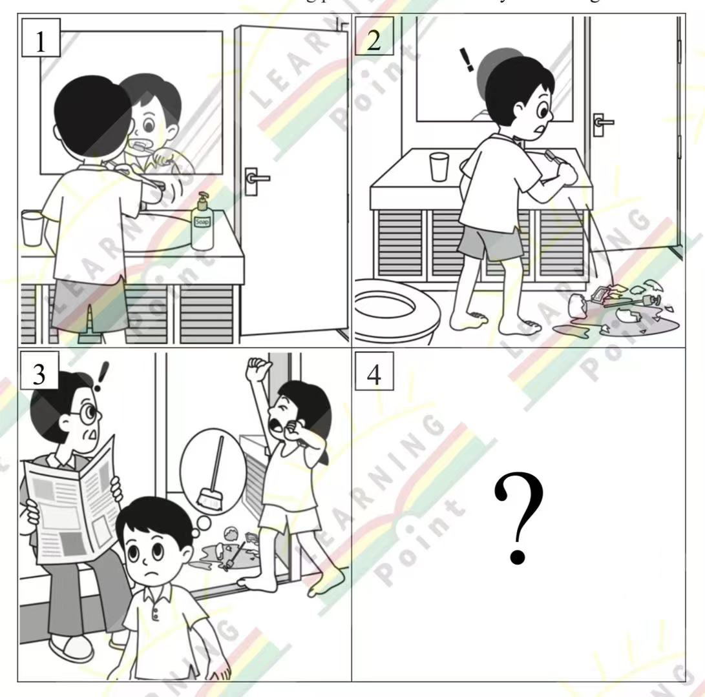
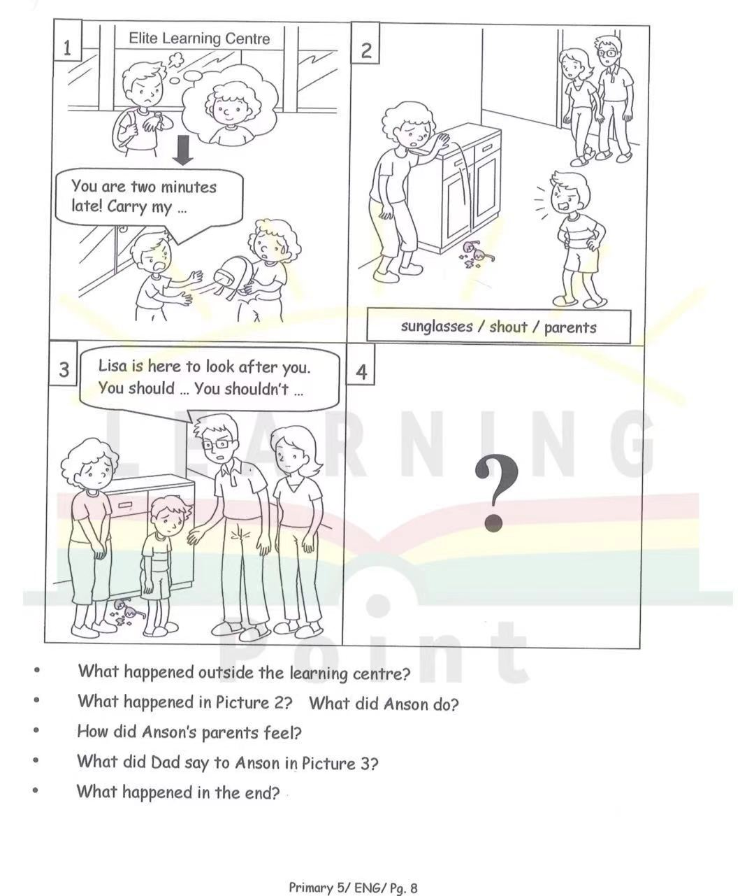
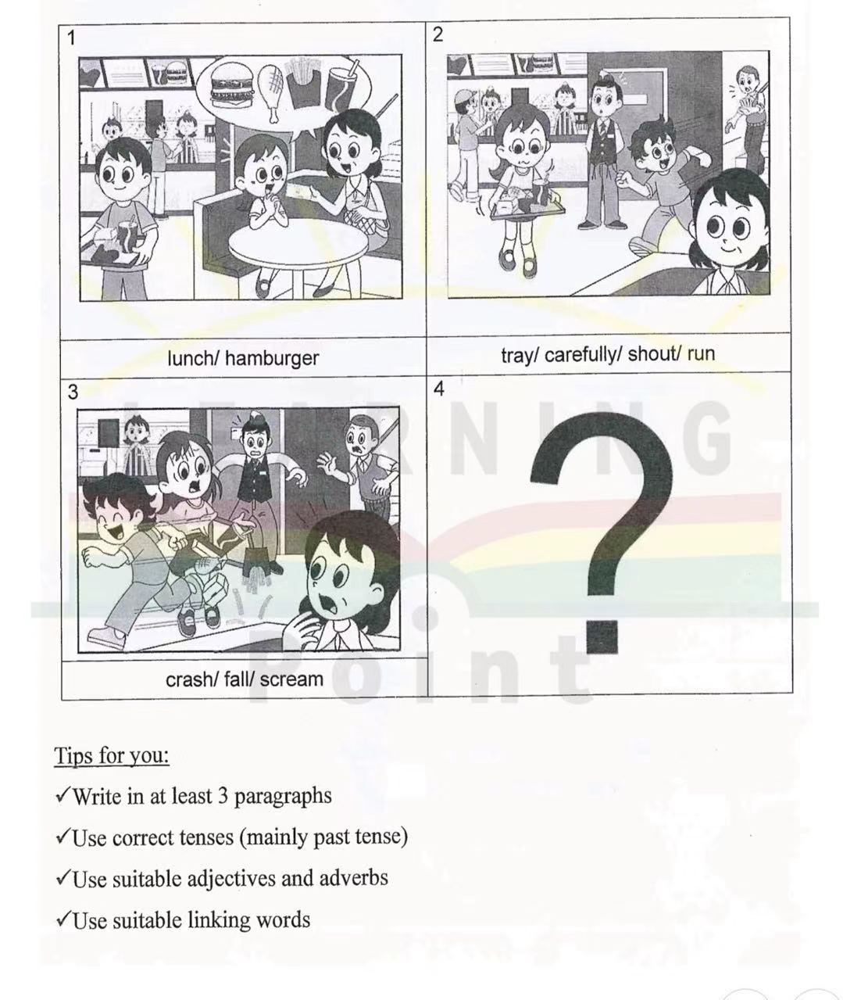

英文面试问题（老师版）
姓名：孙大圣
日期：
用时：
一、自我介绍与个人信息
1. What is your name?
My name is Wu Ruoyang. My English name is Ryan. You can call me Ryan if you wish.
2. How old are you?
I am eight years old.
3. Where do you study now? / Which school do you go to?
I study at Hanlin Primary School. I am in Grade Two.
4. Do you have a nickname? / What can I call you?
My nickname is Qiqi.
二、家庭与生活
1. How many people are there in your family?
There are four people in my family: my dad, my mum, my brother, and me.
2. Who takes care of your studies at home? / Who helps you with your homework?
My parents help me with my homework.
3. What do you like to do with your family on weekends?
I like to watch TV with my family on weekends.
4. What did you do last Sunday?
Last Sunday, I went to the park with my family. We flew a kite and had a picnic. I played on the slide, and it was a lot of fun.
5. What do you do with your brother?
My brother and I like to play basketball together on weekends. Sometimes, we also watch cartoons and laugh a lot.
三、兴趣与爱好
1. What is your hobby? / What do you like to do in your free time?
My hobby is riding a bike.
2. Do you like sports? / What sport do you like?
I like swimming because swimming is good for my health.
3. Do you like drawing / singing / dancing?
I like drawing, but I don't like singing or dancing.
4. What is your favorite toy? Why?
My favorite toy is my toy car because it is my birthday gift.
5. What is your favourite season? Why?
My favourite season is summer. I like it because the weather is hot and sunny. I can go swimming with my dad, and I can eat ice cream.
6. What is your favourite food?
My favourite food is pizza. I like it because it is cheesy and yummy. I usually eat it with my friends on weekends.
四、学习与阅读
1. What is your favorite subject? Why?
My favorite subject is English because English is useful. We can talk to people around the world in English.
2. Do you like reading?
Yes, I do. My favorite book is Journey to the West.
3. What is your favorite book?
My favorite book is Journey to the West. The Monkey King fights monsters. He is very brave. I like him very much.
五、学校与朋友
1. Why would you choose our school?
I want to come to your school because it is very famous. I love reading, and I know that your school has a big library. I will study hard and be a good student here.
2. What do you do during recess?
During recess, I like to go to the library or stay in the classroom. I read storybooks or draw pictures with my friends. Both places are quiet, and I feel relaxed there.
3. Who is your best friend? Why do you like him?
My best friend is Peter. He is very kind and friendly. I like him because we always play football together at recess. He also helps me when I have problems.
六、品格与情景应对
1. If you see a classmate fall down on the playground, what will you do?
If I see a classmate fall down, I will run over to help. I will ask, "Are you OK?" Then I will tell the teacher.
七、看图说话
备注：看图说话没有唯一答案，参考答案仅供参考，可以根据图片内容合理想象并自由发挥。
1. Look at the pictures and tell the story. What happens in Picture 4?

It is morning. The boy is brushing his teeth in the bathroom. He makes a big mess. There is water and rubbish all over the floor. His mother walks in and is shocked and angry. She tells him to clean up the mess. In Picture 4, the boy uses a broom to sweep up the rubbish and a mop to clean the wet floor. He says sorry to his mum. His mum is no longer angry and smiles.
2. Look at the pictures and answer the five questions below. Then tell the story and complete Picture 4.

After class, Anson waited outside the Elite Learning Centre for Lisa. Lisa was two minutes late, so Anson became impatient. He rudely told her to carry his schoolbag.
Later, a pair of sunglasses fell onto the floor and broke. Anson became angry and shouted at Lisa. His parents heard him and came over. They were shocked and disappointed.
Anson's dad said, "Lisa is here to look after you. You should be polite to her. You shouldn't shout at her."
In the end, Anson realised that he was wrong. He apologised to Lisa and promised not to be rude again. Lisa forgave him, and his parents were pleased that he had learnt to respect others.
Later, a pair of sunglasses fell onto the floor and broke. Anson became angry and shouted at Lisa. His parents heard him and came over. They were shocked and disappointed.
Anson's dad said, "Lisa is here to look after you. You should be polite to her. You shouldn't shout at her."
In the end, Anson realised that he was wrong. He apologised to Lisa and promised not to be rude again. Lisa forgave him, and his parents were pleased that he had learnt to respect others.
3. Look at the pictures and tell the story in at least three paragraphs. What happens in Picture 4?

It was lunchtime at a busy fast-food restaurant. A boy bought a hamburger and a drink. He carried the tray carefully towards his table.
Suddenly, another boy ran through the restaurant and shouted loudly. He did not look where he was going, so he crashed into the boy carrying the tray. The boy with the tray fell to the floor and screamed. His food and drink spilled everywhere, and the people nearby were shocked.
The running boy immediately stopped and helped the other boy up. He apologised sincerely and helped clean up the mess. Luckily, the boy with the tray was not badly hurt and forgave him. The running boy promised that he would never run in a restaurant again.
Suddenly, another boy ran through the restaurant and shouted loudly. He did not look where he was going, so he crashed into the boy carrying the tray. The boy with the tray fell to the floor and screamed. His food and drink spilled everywhere, and the people nearby were shocked.
The running boy immediately stopped and helped the other boy up. He apologised sincerely and helped clean up the mess. Luckily, the boy with the tray was not badly hurt and forgave him. The running boy promised that he would never run in a restaurant again.